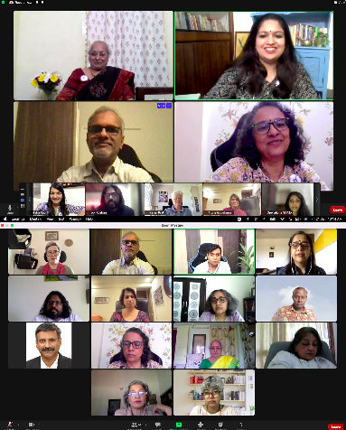
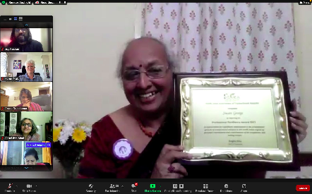
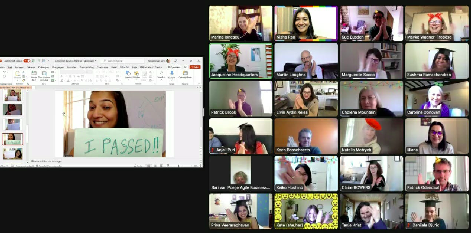
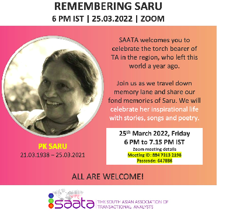
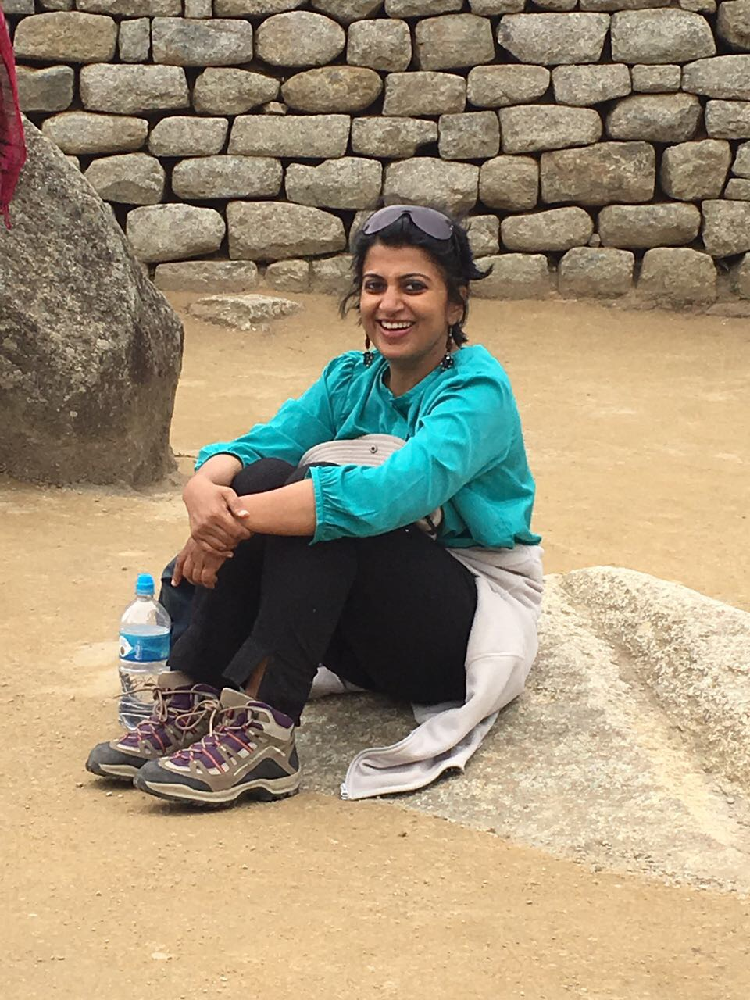
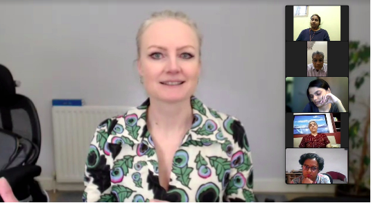
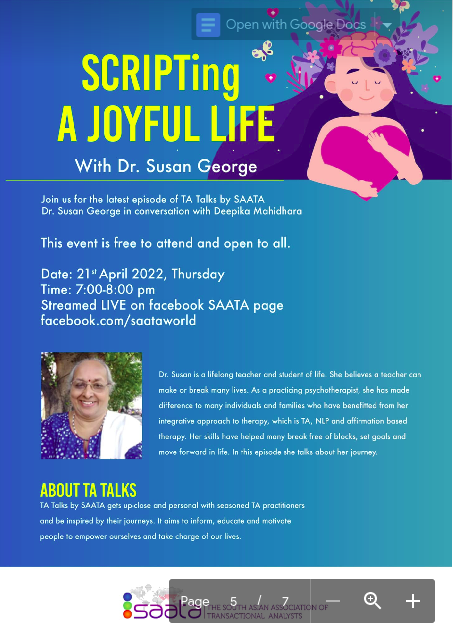

|
Eric Berne defines Physis as “the force of Nature, which eternally strives to make things
grow and to make growing things more perfect”.
2022 started at SAATA with Physis in action. The MLL scheduled for the 7th,8th and 9th
was themed around Physis. This was SAATA’s second online MLL and it was indeed a treat to
be part of stimulating discussions, thought provoking ideas and meaningful associations.
Trainers, supervisors and trainees together engaged in exploring and discovering physis, its
presence in the here and now, its impact in practice and its role in the world and
community.
Our Plenary panellists included Balamurali Natrajan, Santhya Vikram and Maya Jayapal.
Balamurali shared his ideas about Physis’s impact on the socio-cultural dynamics of the
society. Santhya Vikram shared her thoughts as an educator connecting Rudolf Steiner’s
ideas to Physis. Maya Jaypal concluded with her thoughts around how Physis brings
together fragmented parts and makes the whole.
A first in the history of MLL was the opportunity to listen to MD Pallavi’s soul-stirring music
with the theme of Physis at its heart. Pallavi is an acclaimed singer from Karnataka, her
genre bring Sugama Sangeeth with many awards to her name.
Over the three days of the MLL, we explored what Physis meant to us, when and how we
have caught glimpses of it in action and how it impacts our practice. In acknowledging and
celebrating Physis, we concluded with renewed energy - a crucial need after the trying times
we have gone through. It was indeed a gentle reminder that life is all about working towards
the growth of ourselves.
Highlights from the SAATA Annual General Meeting (21 Jan 2022)
New appointments for the year were announced :
- - Prathitha Gangadharan- appointed as the Treasurer.
- - Dipankar Das,- appointed as Jt. Treasurer.
- - Gunjan Zutshi- appointed as VP-Operations
- - Jaseem Koorankot appointed as Head - Research for SAATA

SAATA Professional Excellence Award 2021
The board announced the SAATA Professional Excellence Award for the year 2021. The
recipient was Susan George. Susan was awarded the SAATA Professional Excellence Award
for her commitment and extraordinary contribution to the professional growth of SAATA.

Exam celebrations
We had 22 Diploma awardees and SAATA’s first Advanced Diploma in Education was
awarded to Nisha Rao. The numbers continue to grow which is indeed heartening!

Remembering Saru
We organised a memorial meeting on the first anniversary of our dear Saru moving on. It
was a warm, soulful and spiritual evening with family and a large number of SAATA
members sharing their memories through anecdotes, poems and songs.

New President Elect – Aruna Gopakumar
The Board of trustees is very happy and excited to inform you all that Aruna Gopakumar, who presently heads the SAATA-Research and publications team has graciously agreed to accept and take on the role of President of SAATA for the term 2023-2025. She will take on the role of President Elect from June 2022 and President from January 2023.
Aruna has been part of the TA community for two decades and has been an active member of the BOT and EC for the last several years. She has excelled in her roles with her energy, ideas and leadership qualities. In leading the SAATA-Research and Publications team she has made some path breaking initiatives. I wish her all the very best in this new role.

I am grateful that the first half of the year has been meaningful and surely wishing that it's
indeed a year heading towards growth in meaningful ways.
- Ragini Rao. President SAATA
SAATA kicks off 2022 with Powerful sessions
Speaker session on “Mindfulness in Everyday Life”and a TA Talks episode of
“Scripting a joyful life”
In 2022, SAATA continues to expand its audience and create awareness for TA with a series
of events.
The Development Team kicked off the year with “Mindfulness in Everyday Life” by Linn
Brynildsen. Linn is a psychologist and mindfulness teacher, supporting people in finding
ways to live with more ease and to flourish. She did a MSC in Mindfulness-Based Cognitive
Therapy (MBCT) at Oxford University and works in Oxfordshire and surrounding areas.

It was a Zoom Session in an “Ask Me Anything” format, was held on 25 th February, facilitated
by Krishnan Madhabushi. The session covered a wide gamut of ideas, information and
benefits of a daily mindfulness practice. Linn shared how practicing mindfulness enables the
development of a more compassionate awareness, where we have space for making wise
choices for our own well-being and in relation to others.
SAATA also hosted an episode of TA Talks – “SCRIPTing a joyful life” with Dr. Susan George
on 21 st April. In conversation with Deepika Mahidhara, Susan shared her journey as a
teacher and student of life, the role of childhood experiences, injunctions, permissions and
strokes in our journey, the synergy between Chemistry, Psychotherapy, NLP and TA; the role
of SAATA and TA in the community and how she is SCRIPTing a joyful life. Held on Facebook LIVE, the episode was widely watched and appreciated for Dr. Susan George’s candidness,
vulnerability and perspective, inspiring the audience.

The audience for both these sessions were from our TA community and also a good number
were our curious social media attendees. Our social media following has been growing with
these events, helping us to spread the message about TA and mental health.
- Krishnan Madabushi. VP Development
Year 2022 started with a change of lead in the Operations team along with changes in
some other member roles.
Happy to announce that Gunjan Zutshi joined as VP Operations and Manish Narayan
as Technical Consultant. They along with Nisha George, our Operations Executive,
now form the Operations team.
Prathitha Gangadharan who served as VP Operations moved on to take up the role of
SAATA Treasurer. Nafisa Salati and Guru Prasad, who were part of the Operations
team, also decided to move on due to personal reasons. The SAATA Operations
Team would like to thank them all for their support and contributions to streamlining
operations.
As always the team continues to work behind the scenes to ensure that all our
processes run smoothly. We are aware that some of our members might be
experiencing challenges around registrations or knowing their membership status. We
are working hard to minimize such glitches and assure that members have smooth
transactions and experiences with us.
For any queries, please write to “contact@saata.org”.
Note: “membership@saata.org” is no longer a valid email ID and all queries should be
addressed to “contact@saata.org”
- Gunjan Zutshi, VP Operations
SAATA Professional Standards Division (PSD)'s main focus is to make our
certification and professional standards meet the regional requirements. In this regard,
we have updated the diploma handbook, which is applicable from May 1st 2022. The
old handbook will be discontinued from April 30th 2022. Register for the upcoming
diploma exam writing workshop on 22nd May 2022 organised by the PSD team.
Details about the same are circulated through different personal channels of
communication.
We are introducing SAATA - Transactional Analyst Practitioner program this year in all
fields. The certification is to align the competencies that are required in our region. We
will be sharing more details in the following months.
- Sailaja Manacha and Deepak Dhananjaya,
PSD, SAATA.
The current research project of documenting the impact of TA psychotherapy
on the treatment of depression. This project is well under way. A second
research project on the impact of the first (foundation) year of TA training on
Emotional intelligence and Psychological well-being of trainees was initiated. A
four member team comprising Deviga Subramani, Sangita Dilipkumar,
Kanagalakshmi C P, and Rosemary Kurien has come together to do the
research. They are being guided by Jaseem Korankoot, who is the Assistant
Professor and Head of the Clinical Psychology Department at IMHANS
(Institute of Mental Health and Neuroscience).
- Aruna Gopakumar, VP Research and Publications team.
|